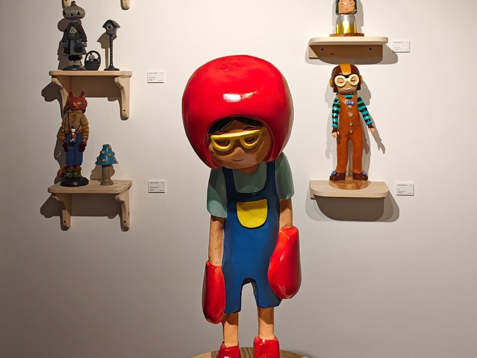
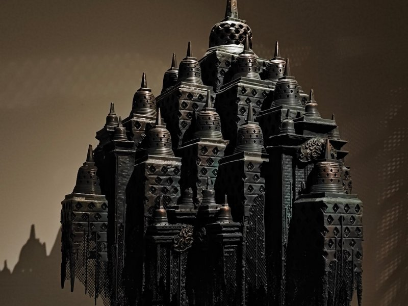
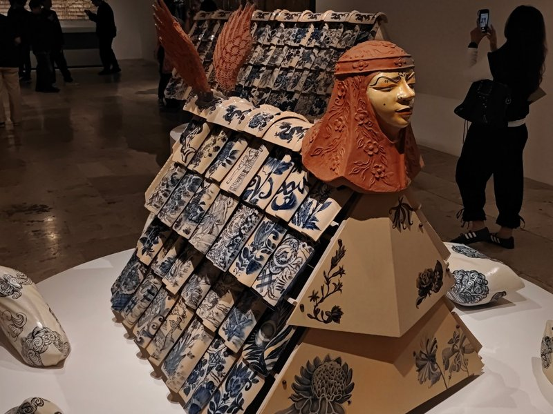

Patung kayu anak berhelm merah dengan kacamata kuning, berdiri di atas alas kayu, dikelilingi patung kecil di rak dinding

Patung logam gelap berbentuk candi dengan banyak stupa berlubang, bagian bawahnya menjuntai seperti jaring

Patung keramik berkepala manusia bertudung tanah liat, bertubuh genteng motif biru putih dan dikelilingi bantal keramik